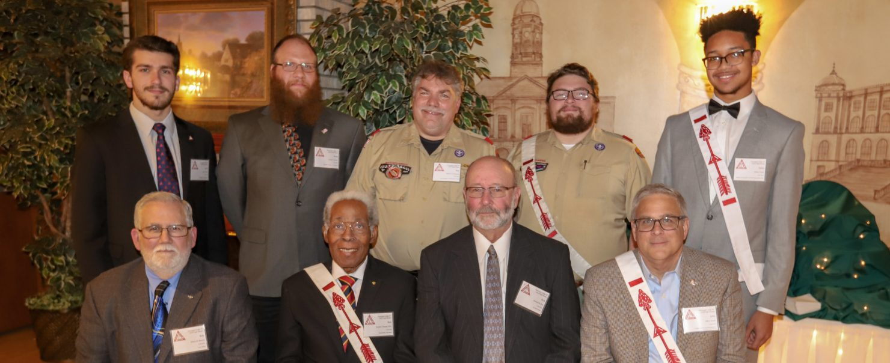

Vigil Honor · Est. 1921 · Chicago Area Council
Preserving
the traditions.
Honoring the Vigil members of Owasippe Lodge #7 — a century of Scout leaders who put service above self and inspired generations of young people in Chicago.

